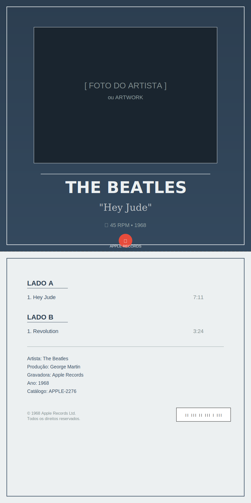

Imprima em papel adesivo circular ou papel comum + cola. Dimensão: 9 cm de diâmetro com furo central de 4 cm. Use compasso para cortar círculos perfeitos!
📀 Capas de Disco (18,5 x 37 cm)
Capa Completa

Artista: The Beatles Música: "Hey Jude" Inclui: Frente e verso Dimensões: 18,5 x 37 cm (dobra ao meio)
Imprima em papel cartolina 120-180g ou papel fotográfico. A capa é 18,5 x 37 cm e dobra ao meio na linha tracejada. Cole as laterais, deixando o topo aberto para inserir o disco!
🔄 Como Converter para PNG/JPG
Método 1: Navegador (Mais Fácil) ⭐
Clique com botão direito na imagem acima
Selecione "Salvar imagem como..."
Escolha PNG (melhor qualidade) ou JPG
Pronto!
Método 2: Ferramentas Online
CloudConvert.com - Converte SVG para PNG/JPG gratuitamente
Photopea.com - Editor online, abre SVG e exporta em qualquer formato
Canva.com - Importe SVG, edite e baixe como PNG
✏️ Como Personalizar
🎨 Editando Textos e Cores
Passo 1: Clique com botão direito no arquivo SVG → "Abrir com" → Bloco de Notas ou VS Code Passo 2: Procure por <text> e altere o texto entre as tags Passo 3: Procure por fill="#cor" e altere o código de cor (ex: #e74c3c para vermelho) Passo 4: Salve e recarregue no navegador!
Códigos de Cores Úteis
#e74c3c - Vermelho
#3498db - Azul
#2ecc71 - Verde
#f39c12 - Amarelo/Laranja
#9b59b6 - Roxo
#1abc9c - Turquesa
#e91e63 - Rosa
🎪 Visualização Interativa da Vitrola
Quer ver a vitrola completa em todas as vistas? Temos um arquivo HTML interativo!